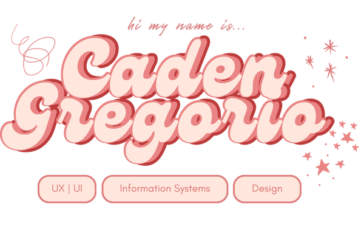

 Recent Designs A graphic design for UNC AASA x Duke ASA annual formal. Recent Projects ✨ 1. Usability Testing / Evaluation 2. MACCI app: Management and Assistance for Children with Chronic Illnesses